My final design explores quiet rebellion through femininity, drawing on historical references and women who challenged gendered dress codes. The look combines soft florals with tailored structures — voluminous trousers and a fitted waistcoat reinterpreting traditional masculine silhouettes through delicate, decorative fabrics.
Velvet trims, covered buttons and cinched details give a feminine twist to the tailored theme. Muted pinks, blues and moss greens suggest an understated romanticism, carefully controlled to maintain a sense of power and composure.
Overall, the design represents dandyism through the confidence of mature women — balancing the softness of femininity with shape, craftsmanship and design.
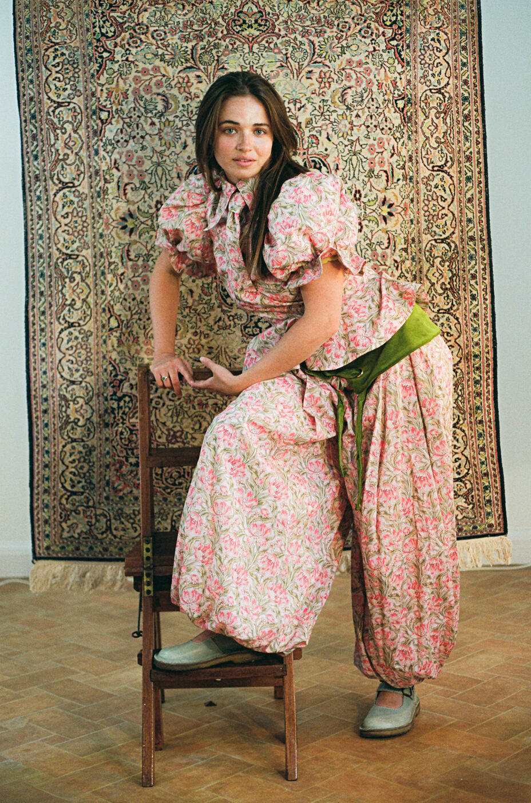
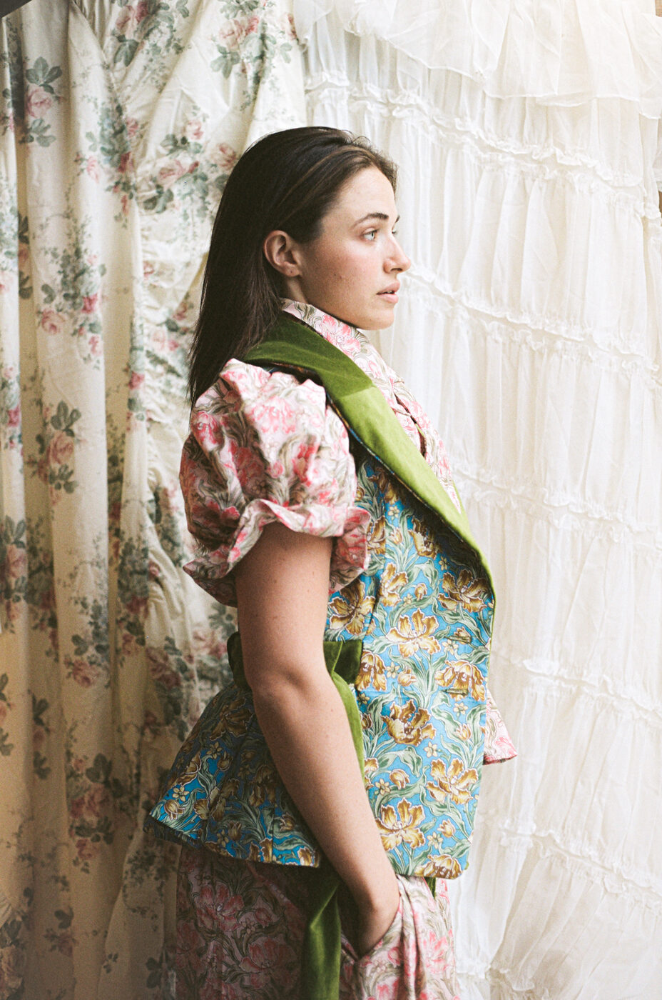
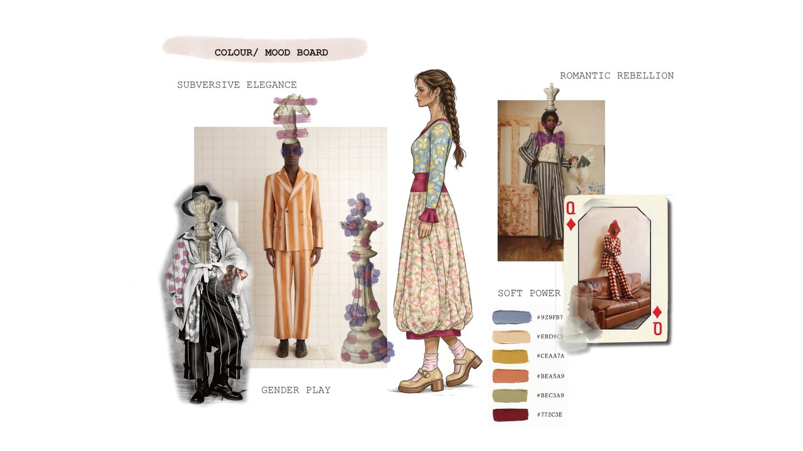
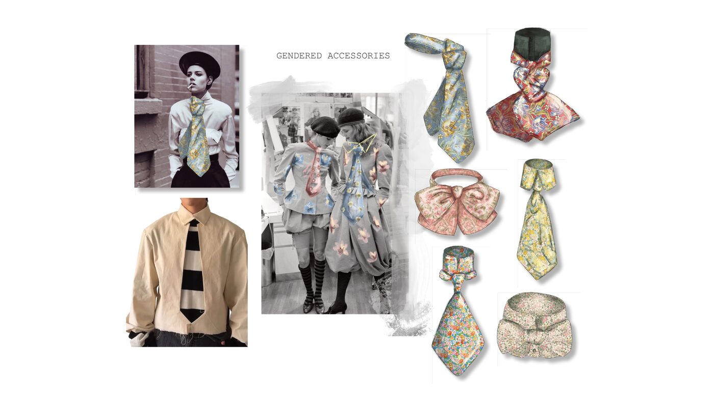
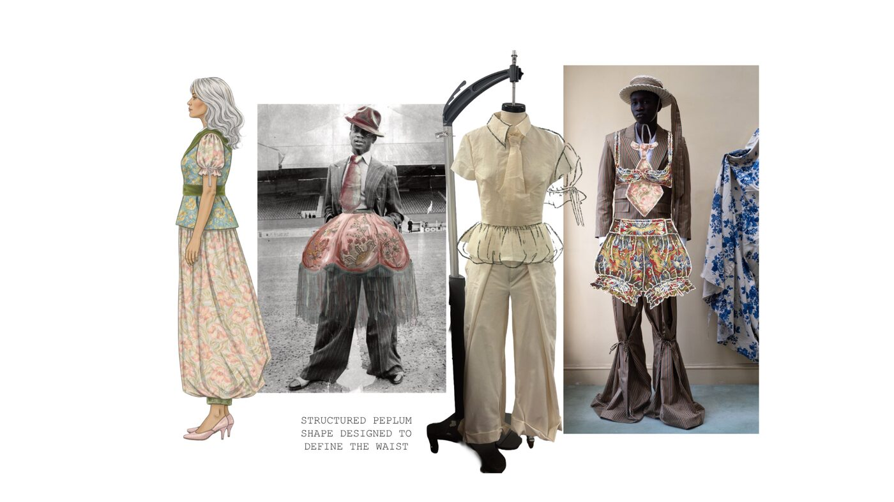
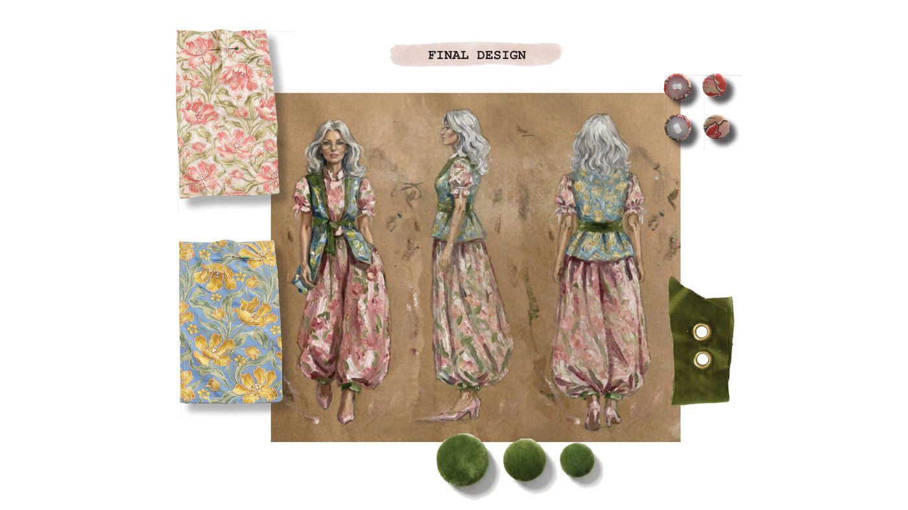
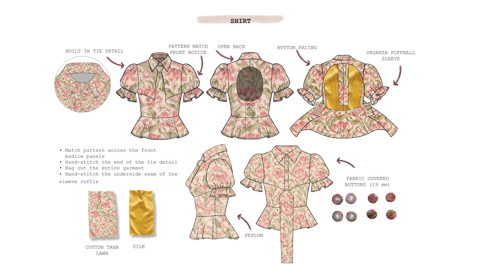
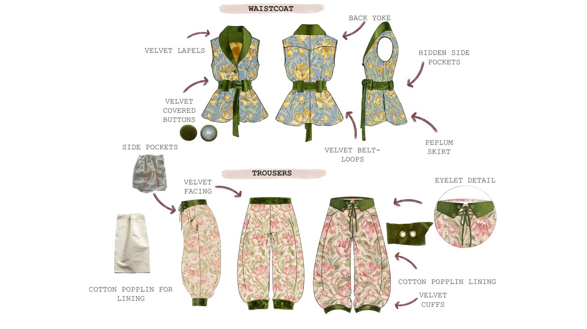
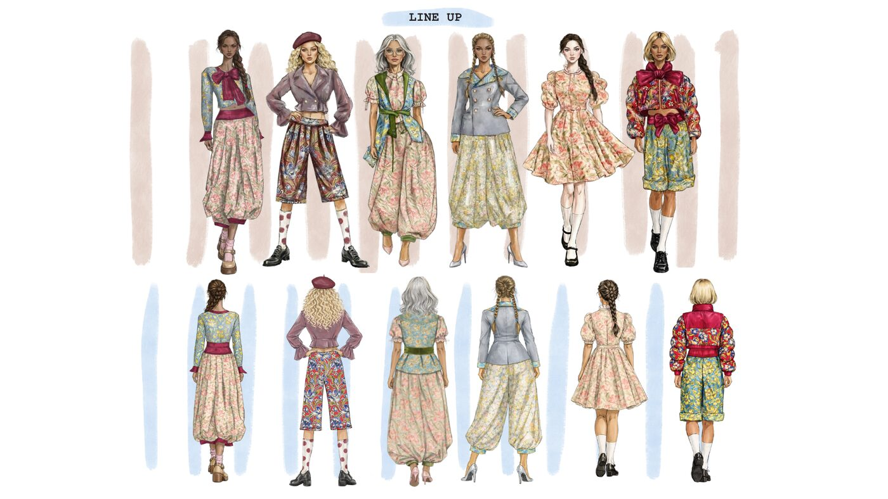
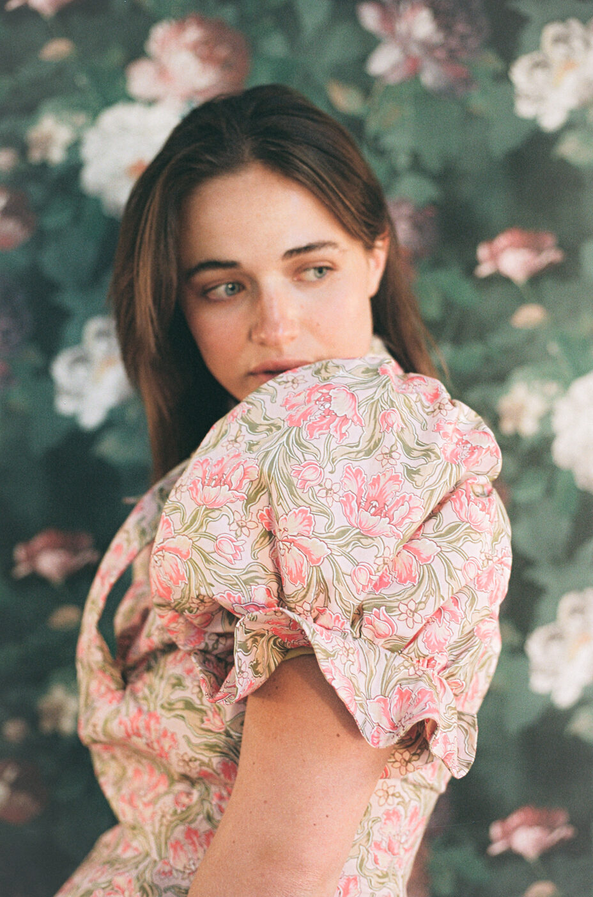
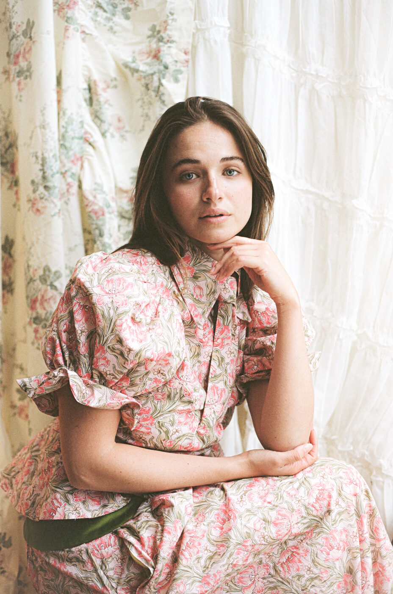
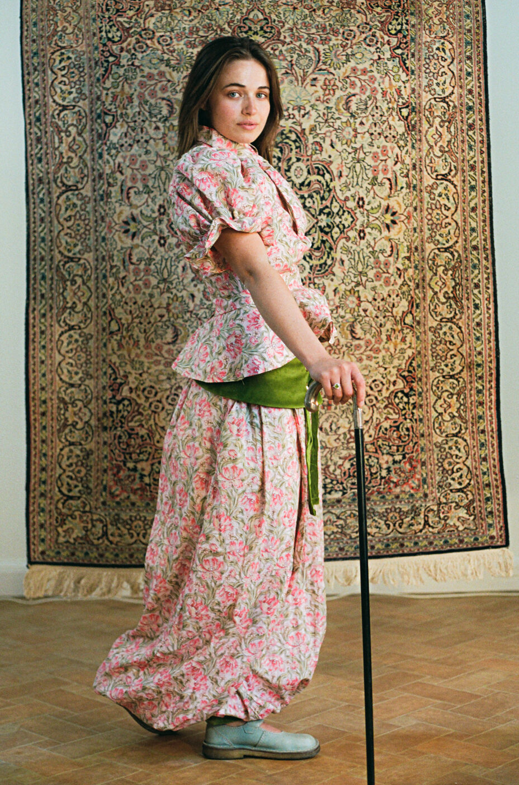
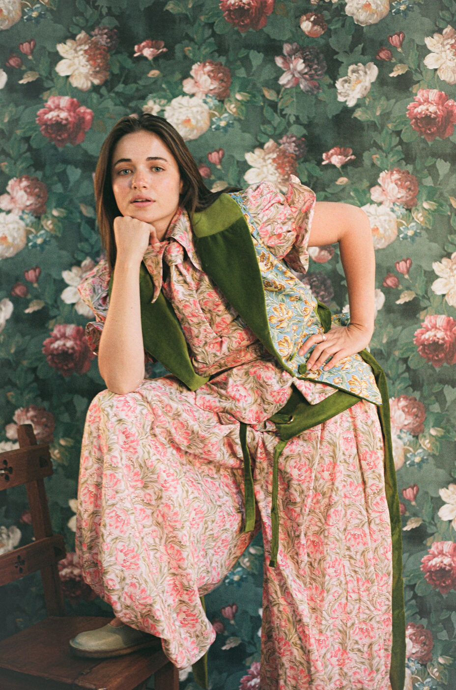